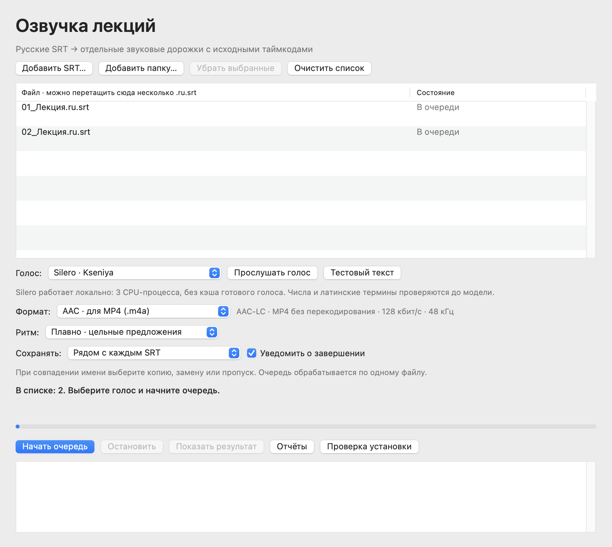

macOS 15+ · Apple Silicon
SRT to Sound
Создаёт синхронизированную русскую озвучку из готовых SRT-субтитров в M4A или WAV.
Выпуск · 3.5.0Перед запускомОтдельно установите Python 3.12 ARM64, FFmpeg, пакеты Silero и модель v5_5_ru.pt. Они не входят в архив. Приложение не нотарифицировано Apple.


Как это работает
- Открыть SRT
- Синтезировать речь
- Сохранить M4A / WAV
Первые шаги
Распакуйте приложение и сначала выполните установку зависимостей по руководству. Добавьте .ru.srt, выберите голос, формат и выходную папку.